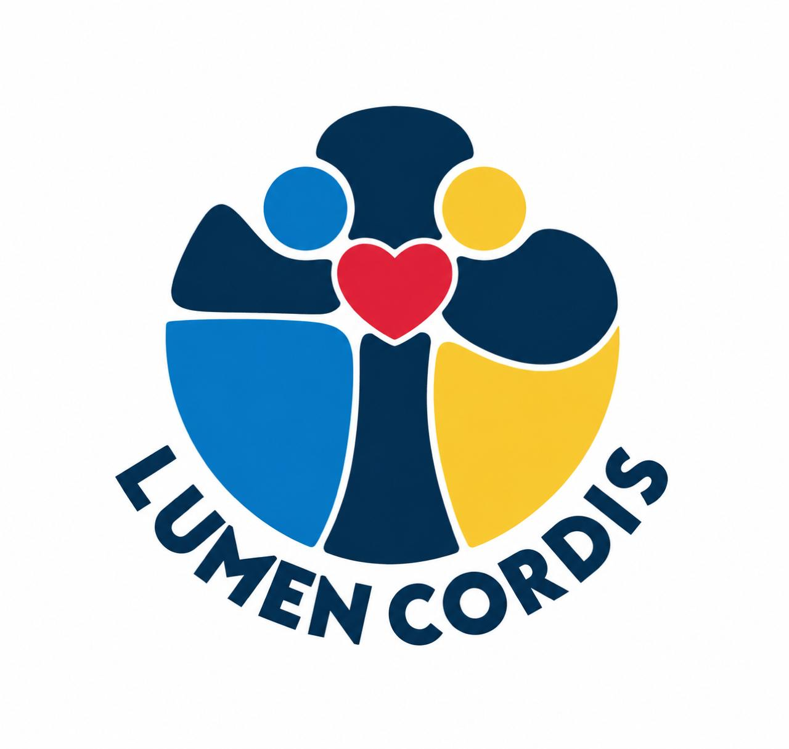

Me veo tan débil que si no tuviera la Santa Comunión caería continuamente; una sola cosa me sostiene y esto es la Santa Comunión. De ella tomo fuerza, en ella está mi fortaleza.
Generador: Plantilla Azul + Imagen Fondo
